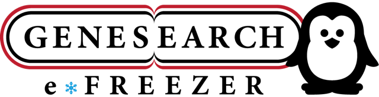

ANU Nanopore Sequencing Workshop
June 14-16, 2017

Abstract
Our nanopore sequencing workshop is targeted at beginners and intermediate users of
the Oxford Nanopore MinION sequencing platform. It represents a unique opportunity
to learn more about this exciting and mature sequencing platform from experienced users.
It is an hands-on workshop run over 3 days, covering the technology,
DNA sample QC, library preparation techniques (rapid, 1D and 1D^2), starting runs,
bioinformatics analysis and interpretation.
The workshop is based on previous efforts from leaders in the field who started UK PoreCamp
(Josh Quick and Nick Lohman) and participated in porecamp.AU. The workshop is targeted at
the sequencing community at ANU, CSIRO, University Canberra, Australian and afar.
Applications for the Nanopore sequencing workshop are now open! 10 spots are reserved
for local researchers at ANU while another 20 are open to the wider community. All
applications are strictly competitive and aimed at ensuring diversity.
The workshop will be held at the Ecogenomics and Bioinformatics Lab (EBL) at the
Australian National University, Canberra, from 14th to 16th of June 2017.
Applications are now open and will close 1st of May 2017.
Follow us on Twitter with #MinIONANU
Thanks to all who attended and made the workshop a success! We will continue to update this website with additional links and resources as they come through.
Quick References
Software Links
DNA extraction:
DNA sequencing:
Looking at Fast5 files:
Basecalling:
Post-bascalling fast5:
Mapping:
Assembly:
Error correction:
Training basecallers:
Real time analysis:
Species identification:
Modification calling:
Experimental code resources:
Workshop Details
- Registration cost: $900 AUD
- The workshop will be held on the ANU Campus - EcoGenomics and Bioinformatics Lab
- Workshop over June 14-16, 2017:
- Day 1: Background, DNA sample QC, library prep, starting your run
- Location EBL
- Day 2: Bioinformatic background and initial analysis of your run
- Location Building 136
- Day 3: Bringing it all together and finishing up
- Location Building 136
Workshop Objectives
- Learn the basics of DNA extraction and DNA QC obtained from (non-)model organisms.
- Develop best wet-lab practices to produce a high-quality MinION library.
- Hands-on experience, running your MinION on your own computer.
- Discover suitable data-handling methods for MinION output.
- Discuss latest bioinformatic methods for analysis of real-time nanopore data.
How to Apply
- THE WORKSHOP HAS NOW REACHED CAPACITY, THANKS VERY MUCH FOR YOUR INTEREST
- Successful participants will be notified by 5th of May.
- Attendance fee: $900 AUD (includes flowcell & library kit for MinION run and day-time catering).
- You must BYO MinION device and a compatible laptop.
- Accommodation not provided - recommendations to come.
- For more information please contact Benjamin Schwessinger.
Workshop Leaders
- Benjamin Schwessinger
- Megan McDonald
- Steve Eichten
Confirmed Trainers
- Benjamin Schwessinger (ANU)
- Megan McDonald (ANU)
- Steve Eichten (ANU)
- Louise Judd (UniMelb)
- Ken McGrath (AGRF)
Sponsors
